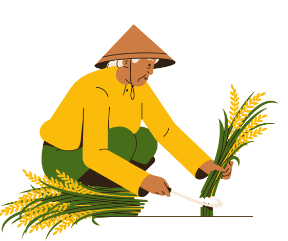
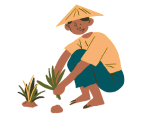

Our Initiative
Indian Farmers are the most devoted farmers in the entire globe, working nonstop for the sake of their
crops day and night. They are revered as idols in India.
The majority of people in India work in
agriculture in some capacity, earning the
country the moniker "land of farmers."
Our objective is to educate, instruct and
guide under privileged farmers so that they can
fraternize their rights and not get exploited by any middleman in the agriculture industry.
We also aim to introduce
new technologies and innovations to the farmers so that they can contribute better vegetation to
the country and can get greater revenues
on their crops.In India
about 80 percent of rural women and 40 percent of rural men dependent on agriculture, still agriculture sector contribute only 20.19% GDP only.
So here as you
can see, there is large rural population dependent on agriculture but still not contributing much to gdp. Why? What you think?
It is due to lack of awareness
about new policies, plans, machinery, irrigation facilities and lack of communication gap between policy maker i.e government and farmers.
So here is our small step
फसल pe hustle,
a website,

Latest News


Farmers move NCLT over Bajaj Sugar insolvency process
Heat to damage wheat crop, warns Indian Institute of Wheat & Barley Research
Guidelines for farmers' subsidy to be revised:Shobha Karandalaje
Budget 2023 gives Rs 968cr digitisation boost to connect, drive agriculture cooperatives
No cause of concern for wheat crop if temp prevails below 35-degree C in mid-March: IARI